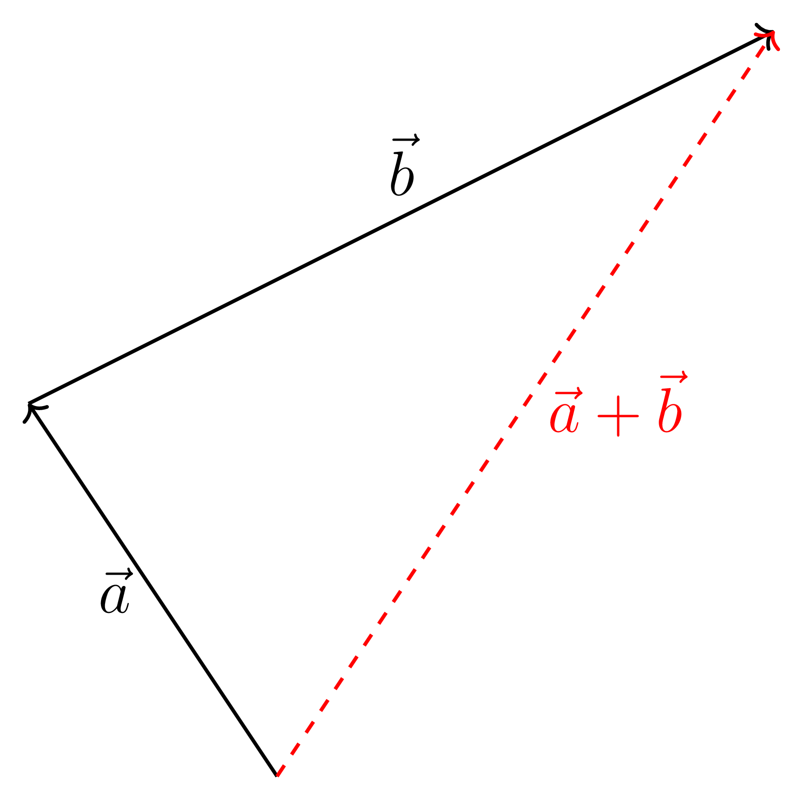
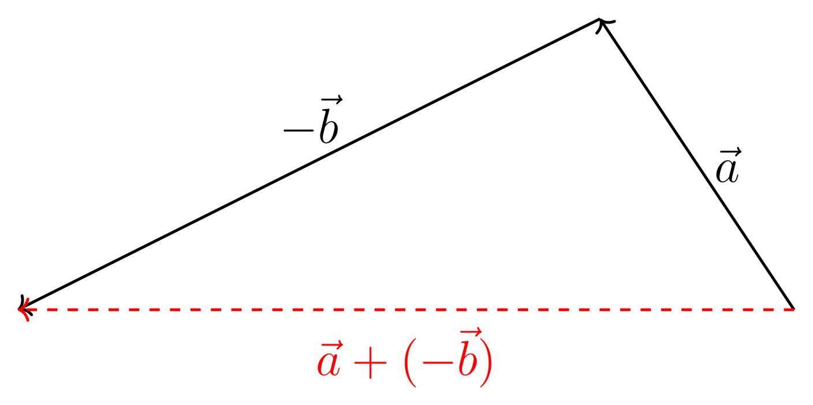

intro
Position is the distance of something from a chosen point of reference, which is usually measured in meters (\(\mathrm{m}\)), in accordance with SI units. Displacement is the change from initial to final position (also in meters). Velocity is the rate of change of displacement with respect to time (meters per second, \(\mathrm{m} ~ \mathrm{s}^{-1}\)). Acceleration is the rate of change of velocity with respect to time (meters per second squared, \(\mathrm{m} ~ \mathrm{s}^{-2}\)).
Bob walks 3 meters to the west and 4 meters north. His displacement has both a size (magnitude) and direction, so we call it a vector. Generally, "things" with magnitude and direction are examples of vectors, but this isn't always true (electric current for example!). Fortunately, for the scope of this class, we won't deal with things like that. We can draw out Bob’s displacement for each time he walked like so:
You can find the total displacement just by using the Pythagorean theorem. \[\begin{align*} c^2 &= a^2 + b^2 \\ c &= \sqrt{a^2 + b^2} \\ &= \sqrt{(3\text{ m})^2 + (4\text{ m})^2} \\ &= \sqrt{25\text{ m}^2} \\ &= 5 \text{ meters} \end{align*}\]
We have essentially just added vectors! We found that Bob's total displacement is 5 meters (magntidue) somewhere to the northwest (direction). Bob is getting pretty tired now so let's forget about him and generalize a bit.
vector addition
The length of an arrow that represents a vector should represent the vector's magnitude. This means longer arrows correspond to larger magnitude vectors. For some vector \(\vec{v}\), the magnitude of the vector is written as \(|\vec{v}|\).
Let's say we are adding vectors \(\vec{a}\) and \(\vec{b}\). In other words, we are finding \(\vec{a} + \vec{b}\). To graphically add vectors, we can draw \(\vec{b}\) with its tail starting at the head of \(\vec{a}\), and then draw the sum from the tail of \(\vec{a}\) to the head of \(\vec{b}\). All we're doing is connecting lines:

Note the magnitude of the vector sum,\(|\vec{a} + \vec{b}|\), compared to \(|\vec{a}|\) and \(|\vec{b}|\). We will only use vector addition as a conceptual tool to better understand how atoms work and how they bond. We won't be doing quantitative calculations with them.
vector subtraction
Subtraction really is just addition. To show this, let's just use numbers for now. If we subtract some number \(y\) from another number \(x\), we can rewrite the difference in terms of addition:
\[x - y = x + (-y)\]
The same thing applies when we're subtracting vectors. The negative sign simply flips the direction of the vector.
\[\vec{a} - \vec{b} = \vec{a} + (-\vec{b})\]

some properties
There are two main "rules" that help keep vector addition in check:
- commutative property: \[\vec{a} + \vec{b} = \vec{b} + \vec{a}\]
- associative property: \[(\vec{x} + \vec{y}) + \vec{z} = \vec{x} + (\vec{y} + \vec{z})\]
Try drawing and adding (or subtracting) some vectors to see how this works!